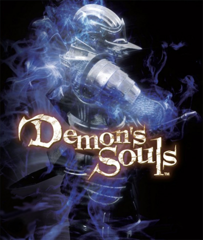

Inicio
Demon's Souls (デモンズソウル Demonzu Souru?) é um jogo eletrônico de RPG de ação produzido principalmente pela FromSoftware e publicado no Japão pela Sony Computer Entertainment, na América do Norte pela Atlus USA e na Europa pela Namco Bandai Games, exclusivamente para o PlayStation 3. Com uma fantasia sombria, o jogador irá ser transportado para o coração de Boletaria, um reino de guerreiros que foi destruído após o aparecimento de uma névoa que trouxe consigo bestas e demônios que se alimentam das almas dos mortais. O jogo é descrito como o sucessor espiritual de King's Field, série lançada nos consoles PlayStation antecessores também pela From Software. Seu sucessor espiritual, Dark Souls, foi lançado para PlayStation 3, Xbox 360 e Microsoft Windows em 2011. Um remake, também intitulado Demon's Souls, foi lançado em novembro de 2020 para PlayStation 5.
História
Rei Allant décimo segundo, em busca de poder e de prosperidade, canalizou o poder das almas. Ele trouxe prosperidade sem precedentes para o seu Reino do Norte Boletaria. Isto é, até um nevoeiro espesso preto cobrir todas as terras periféricas, a fim de cortar o reino do mundo exterior. Aqueles que entraram no nevoeiro nunca mais retornaram. Mas foi apenas quando Vallarfax das presas gêmeas reais conseguiu sair do nevoeiro que o mundo soube sobre a situação de Boletaria. Ao canalizar as almas, o Rei Allant despertou O Antigo, uma grande besta que reside abaixo do Nexus. Com o despertar do Antigo, uma névoa escura varreu Boletária, libertando demônios que se alimentam das almas dos vivos. Os que perderam as suas almas perdem também a sua sanidade e se tornam violentos. O caos reinava, a loucura atacando a sanidade. Os Demônios cresceram e ficaram mais fortes e poderosos a cada alma que devoravam. A lenda diz que vários guerreiros entraram na terra amaldiçoada, mas nenhum deles retornou.
Critica
| Empresa | Nota |
|---|---|
| IGN | 9/10 |
| GameSpot | 9/10 |
| Edge | 9/10 |
| Metacritic | 90 de 100 |
| Game Rankins | 90% |